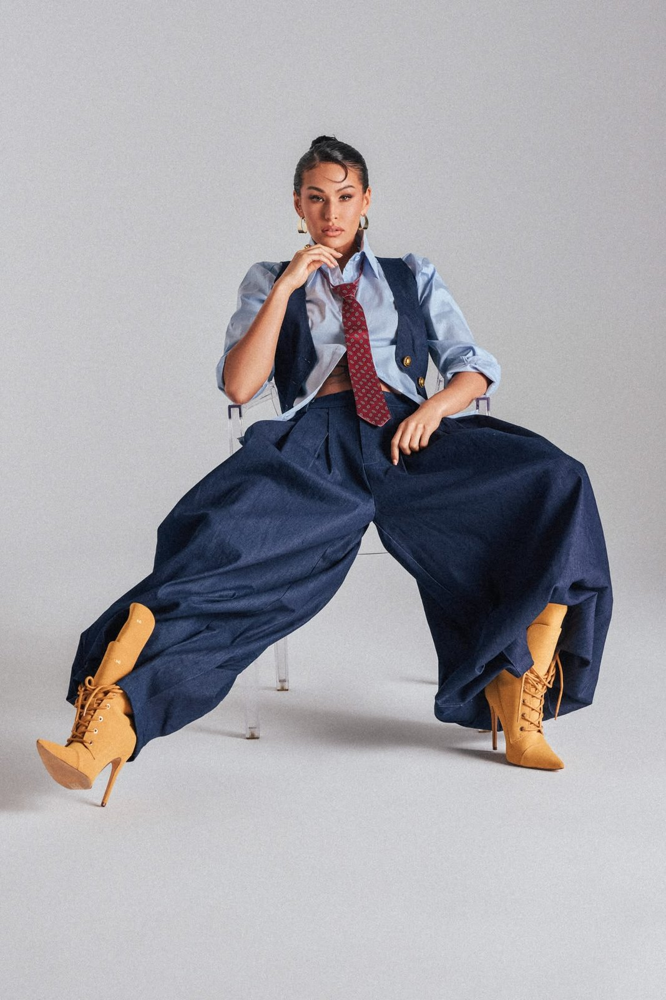
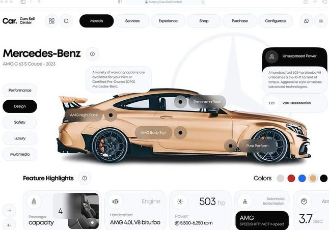
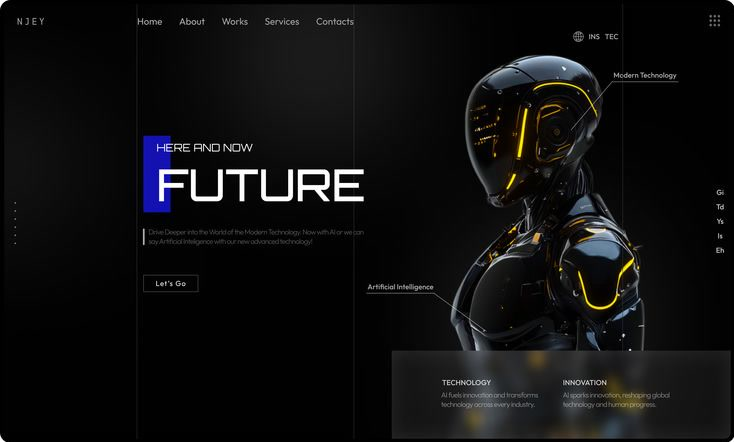
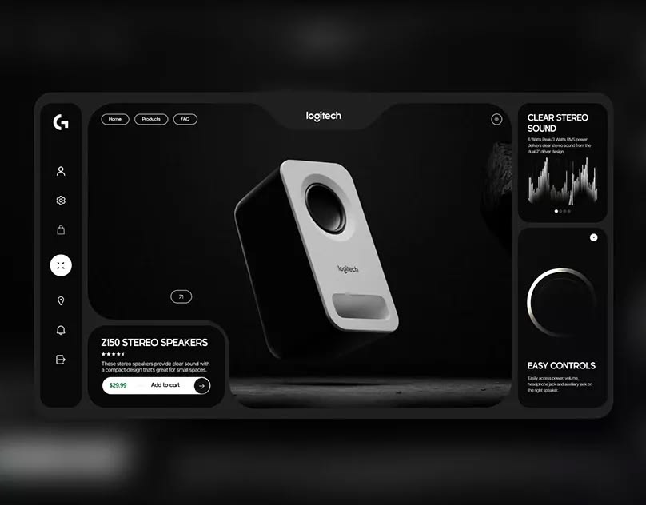

HTML attributes → CSS3 Animations
Made by Leon A.


CSS Animation Library. Made for Designers
Standalone · MIT · zero JS runtime dependency for CSS-rendered effects
fade-up · slide-left · zoom-in · flip-in-x · bounce-in-up · blur-in · roll-in · back-in-down · pop-in · swing-in · rotate-in · fade-blur-up · zoom-in-up · fade-right · slide-up · zoom-out · flip-in-y · bounce-in · back-in-up ·
Click the attribute. Watch it change.
tilt-3d · magnetic · cursor-spotlight · glow-pulse · float · bob · orbit · beam-border · gradient-rotate-border · noise-overlay · aurora · scanline · dot-grid-drift · spotlight-follow · wave-blob · starfield · gradient-mesh · floating-shapes ·
Effects compose. Until they collide.
Entrance
Segmentation & reveals
data-kui="—"
Nothing selected. Tick an effect to build the attribute.
Disjoint channels compose without a conflict.
horizontal-scroll · sequence-scrub · video-scrub · pin-until · scroll-spy · parallax-y · ken-burns · wipe-circle · lightbox-open · scroll-progress-bar ·
Scroll pulls the reel.
data-kui="horizontal-scroll distance:300vh target:.track"


text-reveal-mask · scramble · typewriter · var-weight · odometer-roll · count-up · draw-signature · ken-burns · slat-assemble · masonry-reflow · flip-shuffle · confetti-burst · heart-burst · wipe-diagonal · parallax-rotate ·
A slice of every category

Entrance & exit 48 bounce-in Drag me Gestures & physics 13 elastic-pull


Scroll mechanics 12 scroll-snap-x DECLARATIVE Text & typography 26 scramble, blur-in SVG & icons 17 draw-stroke 0 named effects Numbers & data 13 count-up to:255, zoom-in Media & images 18 slat-assemble Measure, invert, play — the browser animates a layout change it already did. Layout & FLIP 9 accordion-height Hover & pointer 22
tilt-3d — point at it
Ambient 15
aurora
Saved
Feedback & status 17
spinner-ring + badge-pop
Navigation 8
dropdown-open
Hover & pointer 22
tilt-3d — point at it
Ambient 15
aurora
Saved
Feedback & status 17
spinner-ring + badge-pop
Navigation 8
dropdown-open
pin-section · pin-until · pin-spacer · stacking-cards · horizontal-scroll · sequence-scrub · video-scrub · scroll-progress-bar · scroll-progress-ring · parallax-y · parallax-x · parallax-scale · scroll-fade · scroll-desaturate · scrollytelling-step · scroll-spy · scroll-snap-x ·
View Timeline Animation
drag · drag-x · drag-inertia · throwable · elastic-pull · rubber-band · snap-back · swipe · swipe-x · long-press · magnetic-snap ·
Ship it in two lines.
Standalone, MIT-licensed, framework-agnostic. No product or CMS coupling — drop the
two files in and start authoring data-kui attributes.
npm install kuinetic
<script src="./kuinetic.all.js"></script>
<link rel="stylesheet" href="./kuinetic.css">
<script src="./kuinetic.js"></script>
<script>
kuinetic.kuinetic({ observe: true }).start()
</script>